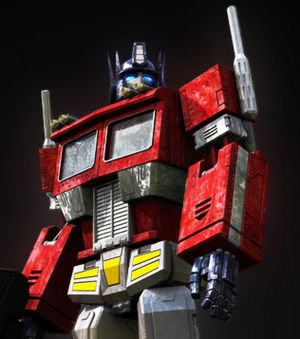

Terran
 De: La Frikipedia, la enciclopedia extremadamente seria.
De: La Frikipedia, la enciclopedia extremadamente seria.
Son los futuros habitantes de la Tierra B, exactamente de los Estados Confederados de América que mandan a sus esclavos para que traigan recursos de otros planetas. A pesar de ser el futuro, estan gobernados por Bush XVII, y la cosa no es que le vaya muy bien. Los soldados Terran usan sustancias con las que aumentan tanto sus características como su felicidad. Bush XVI sigue siendo un gran erudito, hay una anecdota en la que se dejó las llaves de su casa dentro de su habitación y el había salido. Había puesto
a levitar su casa y cuando volvió no podía abrir, justo después, su casa se le cayó encima.
Estarcraf - Guerras de un Bruto (Brut Wars)
Unidades Terran
- VCE: Vil Constructor Estúpido. Un inmigrante ilegal y con claustrofobia (que por cierto es negro (Si, tambien hay racismo es StarCraft)), metido en un tanquesito para recolectar recursos.
El Poderío de los
negros esclavos Terran.
- El marine: Esta unidad se siente bien cuando le mejoras las características. Tiene unas jeringan que llevan heroina para estimularse y violar mas rapido a los enemigos,ademas son amantes de rock and roll y ademas si le haces muchos clic te dicen loco. Son tan flipaos que se visten como los marines espaciales del Warhammer 40000, y a consecuencia de ellos tienen que chutarse más caballo del que pueden soportar.
- El murciélago: Este es un negro fumon que tira semen de color rojo la cual hace muchos daños, también pueden inyectarse herorina.
Un murciélago preparado para luchar
- Fantasma: Este se suele llamar exteminador pero es mas débil, tiene habilidades especiales como bloqueo donde escupe una baba que rodea al enemigo y también se hace invisible. Suele poner bombas nucleares cuando se hacen el hombre invisible.
- Médico: Es una tía que se dedica a preguntar a la gente si necesitan sexo oral mientras los Zerg los están destripando.Te puede dejar ciego y mata a los parasitos con Baygon. Si le das muchos clicks te dice que te hará un "favor", y ya sabes qué tipo de favor. (Pero eso solo en la versión inglesa, en la española la cagaron).
Los terran son humanos, y por eso son muy inteligentes.
- Goliat: Resucitado de entre los muertos vuelve Goliat, para dar por culo hasta que otro le incruste una piedra en la cabeza. Es un robot controlado por el tio de adentro, con dos cañones en ves de brazos y cohetitos antiaereos para cargarte a los avioncitos enemigos (donde tiene el botón de off).
- Tanque: Un tanque del transformer con un tio medio gordo adentro. Es lento y sus disparos son más débiles que la eyaculación de IP anónima. Pero con una mejora se transforma en un cañonazo y tira una eyaculación muy fuerte que alcanza kilómetros.
- Buitre: Es una porquería . . . en serio, es una reverenda MIERDA, solo es un tío ebrio en moto que corre mucho, dispara poco, y caga unas minas muy amigables. Y si le haces muchos clics, te manda a la mierda.
- Nave de eyaculación: Es una perra que quiere hablar varios idiomas a la vez dice que te abroches el cinturon, y agarrala bien fuerte. Come goma de mascar. Los americanos nos la colaron, ya que de una gachí seductora de la versión original pasó en el doblaje a ser una camionera ropero empotrado.
- Espectro: Cuando un fantasma teme a la batalla y se hace gay (o lesbiana) lo meten en una navecita con un diseño megamolón. Son unos avioncitos que pueden hacerse invisibles.
- Nave de la ciencia: Nave con un inciclopedista, es muy poderosa. Destaca su habilidad "ingerir fabada asturiana", la cual provoca pedos tan poderosos que matan a todos aquellos que los huelan. No existe nave más pelota en el universo.
- Crucero de batalla: Como el Titanic, pero que vuela y tiene una pistola de agua(se dice que el enemigo esta construyendo un iceberg violador . . . no perdon VOLADOR para "HUNDIRLO". El almirante es un britanico con voz de travesti homosexual, tiene un mostacho (Se dice que es Tom Hanks). Suele tirarse una paja maldita, mientras carga, para luego lanzar un semen super poderoso.
- Valkiria: Nave de plástico a control remoto, esta ramera se roba caramelos para disparar contra los avioncitos pero es más débil que la puta madre.
Nuestra Base está siendo atacada!.
Heroes Terran
- Raynor, James Raynor: Se dice que el tío una vez se cansó de andar a pie y llamó a Arnold Schwarzenegger, él lo ayudó dándole una moto. Después se robó un Crucero de Batalla en Aiur vayan a saber ustedes donde. Es el tío de Kerrigan y al principio estaba con los Terran malos (esos que me pegaron en la escuela) pero ellos lo expulsan y luego lo contratan los Hijos de
puta Korhal (Que son los terran buenos). Pero luego se harta de ellos y se pasa al bando ganador, el Protossoario.
- General Edmund Duke: Este tío le pidió de regalo de navidad a Santa Chuck una gran nave para conquistar el mundo. Chuck le regaló la Wikiestrella de la muerte. Un día se hartó y construyó la Norad II, una fortaleza aérea mata-gatitos.
- Sarah Perrigan: Esta es la fantasma psico-
putaamorfa que puede hacerse invisible. Se dice que en su pasado fue la hermana de Lara croqueta y una cazafantasmas, también conoció a Gasparín y a otros fantasmitas. En su pasado hizo que su padre se muriera por unamasturbaciontumor cerebral que ella misma le provocó. Luego un agente malo se la llevó y la obligó a usarlos, pero ella se lo forro a ostias sacó de encima y se fue con Raynor.
Los Terran en SC-DOS - Alas Mc'Pollo de Libertá
Son los humanos de siempre, con unos edificios sucios y unidades con trajes como los de Halo pero mucho más gordos. Pueden volar y invocar a Terratron Cyberjesús cuando su base es mínimamente aceptable. Sus edificios ahora son mucho más bonitos, pues son más grandes, más gordos y más redondeados.
 Lider de los
Autobots y los Terran.
Unidades Nuevas Casi Nuevas
- Marine el del principio el primero que sale y el primero que muere
- Segador(Reaper): Recuerdas al mafioso psicópata de la ciudad que por asesino maniático en serie, de 2363800 personas fué a la carcel, perpetuo? Pues bien, ya que la guerra
Alien Zerg llegó a la ciudad, él y todos sus compinches fueron dotados de un par de pistolas asesinas, turbinas en la espalda y granadas para destrozar a todo el que se le atraviesa. Reza por tu vida.
- Fantasma(Ghost): Enemigos eternos de Pacman. Inky y sus amigos vuelven recargados.
- Vikingo(Viking) Los Goliaths tenían la cabeza deforme, después de tantas pedradas de David el Joputa, y querían venganza. Le rezaron a Cyberjesús para que les conceda el milagro, y este les dió un par de alas, y la capacidad de
travestizarse transformarse a su antojo. Desde entonces estos le pegan a diestra y siniestra al pobre David, con rocas del tamaño de un huevo de avestruz. Se llaman a sí mismos Ví King, porque es la frase que emiten cada vez que ven a el Rey David, el Joputa. "Vi King!" (Ví al Rey), antes de molerlo a pedradas.
Sin embargo hay aún algunos Vikingos homofóbicos que le temen a la transformación, y otros tantos que le tienen miedo a las alturas.
- L0L-0M6W7F Tetapros(Banché). Antiguamente, los egipcios usaban helicópteros de una sola hélice. El L0L-0M6 fué el salto a la civilización, pues ahora usan DOS hélices. Para nada parecido a los helicópteros del Jefe del Equipo Rocket, y a los de Avatar
- Thor: Después de la tercera venida de Jebus, y antes de la venida de Cyberjesús, Thor planeaba apoderarse de todas las Jessis del planeta para volverlas sus esclavas sexuales. Pero a las Jessis les encanta
lo duro y los motores (véase Gasolina), por lo que Thor buscó los planos de Ironman (los mismos que usaría después Cyberjesús) y se autoimplantó maquinarias, que terminarían por desactivar su voluntad y convertirlo, tiempo después, en un arma de los Terranianos.
Crucero de Batalla(Battlecruiser). Estas enormes naves son construidos de chatarra espacial y tienen un cañón de sobrecarga de lefa sideral que disparan contra sus enemigos.
- Cuervo: Ya sabes lo que dicen: "Cría cuervos y te lanzarán Misiles Cazadores Perseguidores".
Ero-Terrans
Ahora cualquier bichejo puede ser Héroe...... incluso tú.
- Héroes Terran de SC-DOS
El Cuy Mágico vuelve de las profundidades para cobrar intereses...
Mr. Bean, en otra de sus tantas locas aventuras.
Tauren y Murloc, copy-paste del Guarktraft.
Véase también
Autor(es):
- Krusher
- El Sevillano
- Zulhen
- Andrios
- Veni Vidi Vici
- Kablo
- Supersaiyan
- Stiguard
- Kuchiki
- Raitei1000
Frikipedia 2005-2016, Licencia
GFDL 1.2 - Extraído por FrikiLeaks